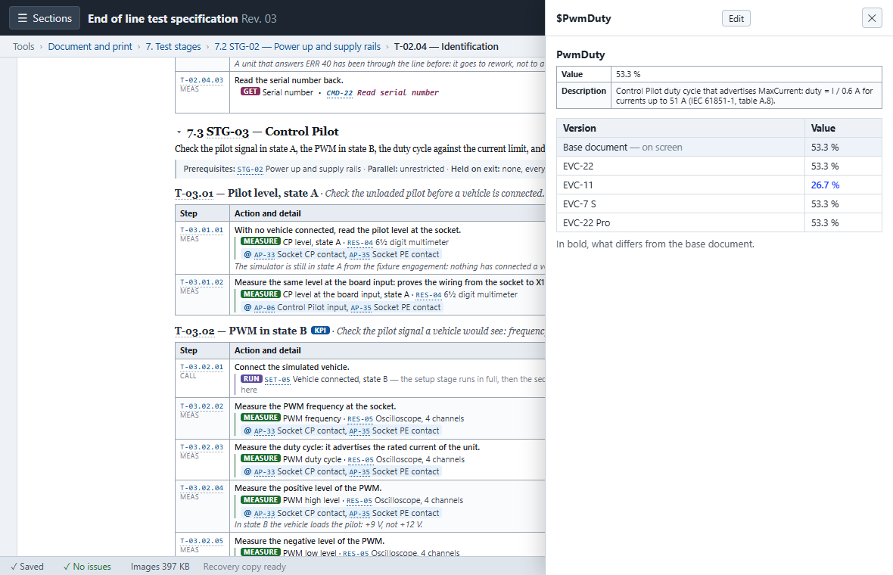
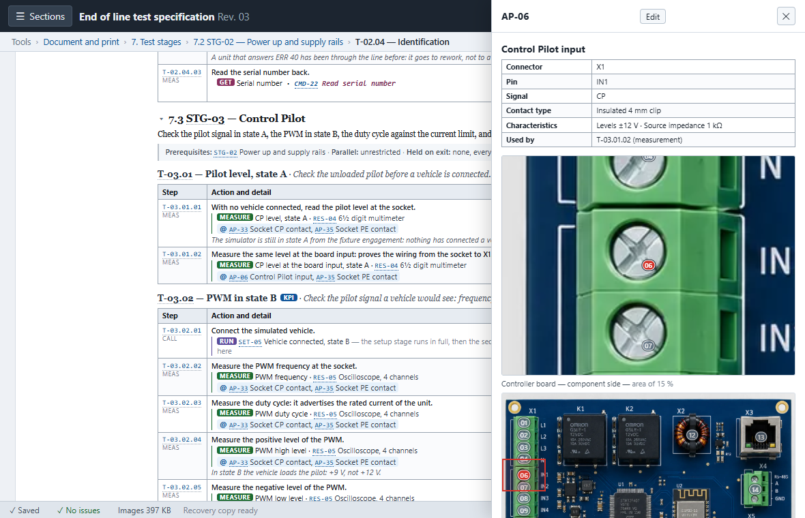

DEDALO
DEDALO
Perché DEDALO?
Sette motivi, dal più critico al più strategico — efficacia, tempo, costo. Ogni punto si apre per il dettaglio; letto solo di titoli, dura un minuto.
-
01 Le varianti di prodotto non si disallineano mai. Un file base, infinite varianti — non N copie da tenere sincronizzate a mano. perché conta → chiudi ↑
Con Word, 5 varianti significano 5 file duplicati: cambiare un componente comune vuol dire aggiornarli a mano uno per uno, con alto rischio di dimenticanze. In DEDALO si modifica il componente nel documento base e la modifica si propaga automaticamente a tutte le varianti; dove una variante differisce, il testo è marcato in blu elettrico — visibile anche guardando il documento base, così chi lo legge sa cosa cambia senza doverlo indovinare.

-
02 Gli errori si vedono prima di uscire, non durante il collaudo. Riferimenti, formule e limiti sono verificati, non solo scritti. perché conta → chiudi ↑
In Word puoi scrivere qualunque cosa, anche un errore grossolano — una tolleranza impossibile, un rimando a un passo che non esiste più. DEDALO controlla automaticamente riferimenti orfani, cicli logici tra le fasi di test e la coerenza delle misure calcolate, e li conta in tempo reale nella barra di stato. Non impedisce il salvataggio — resta un file, sempre modificabile — ma rende impossibile non accorgersi dell'errore prima che il documento esca.
-
03 Tracciabilità delle revisioni, generata — non compilata a mano. Storico immutabile e matrice dei cambiamenti, un click. perché conta → chiudi ↑
Ricostruire cosa è cambiato tra due revisioni Word è un lavoro manuale e impreciso. In DEDALO, congelare una revisione (Validate) crea uno snapshot immutabile dentro lo stesso file; confrontare due versioni produce una matrice — una colonna per revisione, una riga per ogni cosa cambiata, colorata per tipo. È lo stesso livello di tracciabilità che il controllo documenti di ISO 9001 chiede — il tool non certifica nulla da solo, ma il lavoro di audit lo trova già fatto.
-
04 Meno tempo sul layout, più tempo sull'ingegneria. L'ingegnere inserisce i dati tecnici; l'impaginazione è automatica. perché conta → chiudi ↑
In Word si perde tempo a rincorrere tabelle che si scompaginano, interruzioni di pagina impreviste, numerazioni che saltano. DEDALO impagina tutto in automatico: lo stesso contenuto che occupava 15 pagine ne occupa 10 — misurato, non stimato, sul caso reale della compattezza del layout.
-
05 I marker di test si posizionano sulla foto, non con le frecce di Word. Un click sul codice, crop automatico sul punto esatto. perché conta → chiudi ↑
In Word, aggiornare i marker con le frecce disegnate a mano è un incubo geometrico ad ogni revisione della scheda. In DEDALO un click sul codice del test apre automaticamente l'ingrandimento sul punto esatto — utile a chi, in linea, deve solo capire dove appoggiare i puntali del tester senza cercarlo nella foto intera.

-
06 Zero attrito: nessun costo IT, nessuna infrastruttura. Un file HTML che è insieme applicazione e documento. perché conta → chiudi ↑
Niente da installare sui PC industriali, nessun server, nessun abbonamento cloud, nessun diritto di amministratore richiesto. Elimina le barriere d'ingresso tipiche del software enterprise — un fattore che pesa quanto le funzionalità, quando a decidere è l'IT. Il codice sorgente è pubblico e verificabile: github.com/HeronForge/Dedalo.
-
07 Un formato dati aperto, non un file chiuso in un programma. JSON nativo; esportazione .docx strutturata, non un'istantanea. perché conta → chiudi ↑
Il formato di interscambio nativo è JSON (tsw-authoring/tsw-export), leggibile da qualunque script — la porta aperta per automazioni future, senza doverci scommettere oggi. E la preoccupazione di "perdere i vecchi file Word" si risolve al contrario: l'esportazione .docx è strutturata — stili, sommario navigabile, intestazioni vere — non un'istantanea da sistemare a mano.
Chi scrive le specifiche ogni giorno vede un altro lato della stessa storia — meno strategia, più «non mi si rompe più niente».